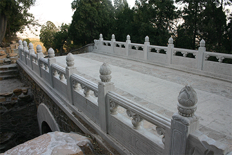

八大处除“三山”、“八刹”之外，更有“十二景”可供玩赏。昔人赞曰：“三山如华屋，八刹如屋中古董，十二景则如屋外花园”。其千般诗情、万种画意足以使人心旷神怡。此十二景依序为：绝顶远眺、春山杏林、翠峰云断、卢师夕照、烟雨鹃声、雨后山洪、水谷流泉、高林晓日、五桥夜月、深秋红叶、虎峰叠翠、层峦晴雪。
第一景·绝顶远眺
出七处宝珠洞南门，沿盘山曲径上行片时可达虎峰绝顶。居高临风远眺，京城之内如画美景便倏然扑面而来。西望高山峻岭，重重叠叠不计万千；南瞰永定河水，蜿蜒如带，脉脉东流；东看千古故都，薄云浅雾之中，惟其危楼高塔之姿雄奇可见；畅目北向，则万寿山殿阁如画，昆明湖明镜一方，玉泉山塔直竖明烛。徐徐环顾，但可发见，京城所处正是东滨大海、南阻长河、西倚太行、北据长城，颇具襟心带河、虎踞龙盘之象。江山多娇如是，不禁华夏子孙遐思万千。
第二景·春山杏林
八大处之春确以春山杏林之美为最。当春之日，虎头峰下万杏齐发，一团团、一簇簇、一片片，铺天盖地，恰如瑞雪纷飞，满眼皆是。只惹得蜂蝶如醉、游者如痴。此景此情正如昔人所咏：“举目虎头峰，迤逦皆红杏。春山施薄粉，望之若仙境。”
第三景·翠峰云断
仲夏清晨，雨后天气湿润时，常可见如素如练的云雾飘浮于三山之腰，似断还连的画中之境。注目静观，或自峰后绕于岭前，或从石隙游出升腾；有时凝固不甚流动，有时行走又很疾速。翠微山、虎头峰间凝然不动者居多，卢师山青石黛树中则流走如飞者众。概山势高低不同所致。
第四景·卢师夕照
三山之中，卢师山位居东北。平坡、翠微二山较高，因而日落较早，而卢师却日落独迟。所以流霞落日之美则不得不让于卢师所专享。且当山影遮断西面山坡时，东山卢师就愈发显得光明非常。峰影参差，
岚光浓淡，于半明半暗之中，更加使人感到自身如在画中。
第五景·烟雨鹃声
崔涂的诗中有“杜鹃枝上月三更”，范成大的诗中有：“子规声里雨如烟”。读此类诗句不禁使人心驰。然而西山八大处山林之中确有此景。每当暑夏，寺外林中杜鹃不时长啼：“不如归去……不如归去”之声，凄婉惊心已极，且不分晴雨，不舍昼夜，闻之则使人不禁泪下。山中雨景即可入画，再加此鸟啼不绝口，真不啻一幅有声有色的动人画卷。
第六景·雨后山洪
三山之下，自同济桥起，由北向南有一水道名柳溪，为三山各水流汇集之处。每逢雨后，山洪突发，柳溪即成大河，汤汤不息。而高山之水流入谷中，则成瀑布，声若洪钟。大悲寺北谷，三山庵南谷均有此景。而秘魔崖之水瀑为最甚。这便形成一派惊心动魄的水体景观。昔有“高亭开大，此乐谁与比”诗句赞此。
第七景·水谷流泉
八大处山林古刹之景固然很美，但却因水少而令人遗憾。灵光寺和龙泉庵虽有泉水汇而为池，但山涧之中却略显干涸。只有到了夏秋天作大雨时，各山谷方随之现出不息之水流。泉流亦随雨量多寡而变化。且山谷之中林木茂密、浓荫宜人。树下巨石形貌各异，有的如床如枕，有的如凳如几，人到此间或卧或立，或坐或倚，静静谛听流泉呜咽之声，真恍入清凉世界，早经忘却人间一切烦恼之事，弥天暑气也顿然消去。赏玩水谷流泉绝佳所在有三，其一为三山庵北谷，该谷树木茂密，大石嶙峋，泉流有声，清洁无比。游山男女士子常赤足流泉之中作半日之冲濯，凉意入心，快慰已极。其二是“四照谷”，位于大悲寺北，此谷流泉最盛，树也茂密。其石块较三山庵北谷更大，南北数十丈间均很幽雅。谷南有一巨大石坑，水盛时可流其中；谷北有一“石床”，“床”下泉流潺潺，叮咚有声。其三是秘魔崖谷。位在秘魔崖西，发现水井处便是佳境。此处西临山，东接谷，大石庞然，古木蓊郁，中间流泉终年不绝。此间橡树均高数丈，蔚然成林，实为他谷所不及。
第八景·高林晓日
出秘魔崖，沿证果寺门前小盘道下行至南面水井，此处树木成林，茂密非常，且均高大参天。日出东坡，光照林梢之时，愈发觉得明暗浓淡别有意趣。唐诗所咏：“清晨入古寺，初日照高林”似不啻此处之景。其林气之清新，环境之幽雅，古木之虬屈，日光之闪耀真令人有一种不可思议之快慰。
第九景·五桥夜月

八大处原有五座较有名气的桥。一为长安寺的长安桥，二为西山饭店的翠微桥，三为救世军的绿板桥，四为柳溪北端的同济桥，五为三山庵下的万善桥。此五桥南北相望，形如贯珠。每当明月中天，或徘徊信步，或倚仗独处，夏则听泉，冬则看雪，观谷陵之苍茫，望长空之皎洁，别有一番清静气象，正可谓一轮高悬，万念俱清。昔人有诗曰：“小桥步月乍惊秋，四望青虚景更幽。几处流泉喧石底，一轮明镜水中浮”。
第十景·深秋红叶
此为八大处一大胜景。霜秋一到，三山之上的黄栌树、火炬树、元宝枫以及柿子树、核桃树和山花椒等等，黄时薄山碎，金迎风闪烁，红时又如二月鲜花处处流丹。加之橡树、青松翠柏，赤橙黄绿交相映衬，景色分外迷人。
第十一景·虎峰叠翠
虎头峰委实并无险峻之概，唯有层层巨岩石质骨露，峭然突起，却也十分引人注目，春夏之际，峰下翠柏层层叠叠、蓊蓊郁郁、莽莽苍苍、生机勃勃煞是可爱。实为西山诸峰中不可多得者。
第十二景·层峦晴雪
西山晴雪”为燕山八景之一。然翠微、平坡、卢师三山亦属西山之脉，此处峰峦起伏，沟壑纵横，殿塔俨然。冬日瑞雪初霁，一派银装素裹，气象何止万千。只引得无数游人欣然往来，踏雪寻幽，摄影留念。